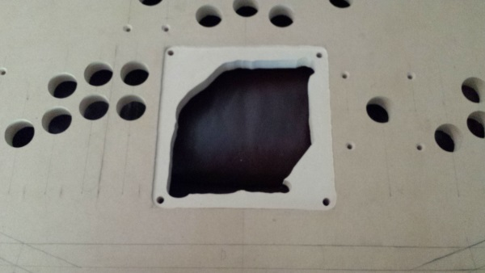
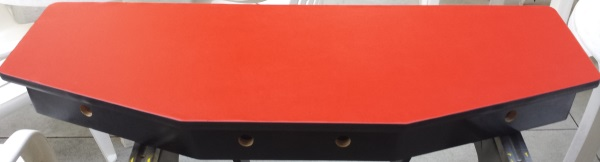

Matthew Gillatt
Computer Programmer
My Personal Arcade Controller
I've always been a big fan of classic arcade games. I've seen pictures online of other peoples' MAME machines, and I thought I'd get in on that action! I don't have room for an entire cabinet, but I'd love to play emulators using authentic arcade parts, with enough to play with friends. I've been planning a 4-player desktop arcade controller, and I'm happy to say that at the end of Summer 2016, I've finally completed it! I'm eager to share my handiwork with the world!
 Last year, when the parts arrived but I didn't have wood ready, I was eager to test them! I measured and punched out holes into cardboard boxes as if they were wood panels, installed the parts, and even wired them to control boards underneath to make them functional! However, I've since removed the wires and electronics, so I could not demonstrate the wiring for these photos.
Last year, when the parts arrived but I didn't have wood ready, I was eager to test them! I measured and punched out holes into cardboard boxes as if they were wood panels, installed the parts, and even wired them to control boards underneath to make them functional! However, I've since removed the wires and electronics, so I could not demonstrate the wiring for these photos.
On the left is the first one. 2 players each had an 8-way joystick, 4 game buttons, a start button and a coin button on the front. The switches underneath were wired to an I-PAC2 board, which treats the inputs like keyboard keys and plugs into a computer's USB port. My nephew's had a chance to play games with this prototype! Someday, I'm sure they'll get to play on my finished controller!
On the right is my second controller prototype. A classic 1-player controller with a 4-way joystick and trackball. The trackball and 3 buttons were wired to an Opti-Wiz board, which treats them as a USB mouse, while the joystick and other buttons went into another I-PAC2 board. My final controller will need all of the control boards together to support 4-players and analog devices such as the trackball. I plan on plugging them all into a USB hub inside, so that the whole box can work with a single cord coming out!
The walls of the controller are being made out of 6 pieces cut out of plywood. The lengths and angles took some careful measurements, and still took a good deal of sanding, putty, and caulk in the end to fit together. In this picture, they are being glued together in order to cement its shape. I later leveled the top and bottom, caulked the joints, and added corner braces to the 90 degree angles.
The plywood for the bottom has been cut out and fitted. Once it, it was attached to the walls with deck screws from the outside, then the screws were covered with wood putty. The cracks were filled with caulk and then the bottom was sanded to make it smooth.
Next came the paint job! The outside was given several layers of gray primer, with fine sanding between each layer. Then, I used Rustoleum satin black spray paint in a few layers. I wasn't able to completely hide the wood grain of the plywood, but it's presentable. If I needed it completely smooth, I could have used MDF for the walls and bottom, like I am with the top lid. After the paint job, I also attached some rubber feet to the bottom.
Now for the piano hinge. It is a 30 inch long hinge, which required me to cut a mortise into the top of the back wall with my router table. It was unwieldy, but ended up secure. The top lid will ultimately rest on the walls with no need for cutting under the lid.
The cardboard prototype of my final board! The measurements weren't too precise in this step, because the layout was somewhat experimental. I punched out holes using the same 1-1/8 inch forstner drill bit that I will use in the final product.
The parts were installed into the prototype, and attached to the piano hinge. I also had to cut out a hole for the trackball with a box-cutter. I was now able to confirm that there's enough elbow room and wrist room for each player, and that the button layout was comfortable! At some point, I also drilled 4 holes into the front sides for coin buttons. This prototype wasn't wired, so it's not functional.
My MDF board may be the most important part of the build! It had been cut to the right shape previously, and had a slot cut out along the sides for the t-moulding. Now, I had to carefully measure and draw where the final parts would go.
 Over a few hot summer days, I cut out over 40 holes in the 3/4 inch MDF with my forstner bit! Some holes weren't quite spaced correctly, so they had to be redrilled or sanded until the push-button that fit inside had enough wiggle room to align correctly. I also drilled and countersank the holes for the joystick mounting screws. Once countersank, they should go underneath the vinyl covering I will attach on top.
Over a few hot summer days, I cut out over 40 holes in the 3/4 inch MDF with my forstner bit! Some holes weren't quite spaced correctly, so they had to be redrilled or sanded until the push-button that fit inside had enough wiggle room to align correctly. I also drilled and countersank the holes for the joystick mounting screws. Once countersank, they should go underneath the vinyl covering I will attach on top.
The trackball needed special attention. First, I needed a large hole for the mechanism to fit through, so that it touched the plate on top. I didn't have a jigsaw, so I cut it out with a long router bit instead. Then, I had to route a shallow square on top so that the trackball's plate was flush with the surface, so it too could fit underneath the vinyl covering. I also used the router under the 4 joysticks, so they would be mounted higher.
The test fitting of the parts into the final board went very smoothly! I was now confidant that I was finished cutting it, so that I could move on to decorating the MDF.
The underside of the lid would partially hang over the walls, but wouldn't be covered by vinyl. So I decided to paint it the same black spray paint as the rest of the box. Careful use of painter's tape and cut out newspaper let be paint just the right shape without staining inside the holes!
 Now, I had to glue on the red vinyl cloth. The spray adhesive I bought was too small for the project, so near one side, it wasn't very tacky. I tried stretching the cloth and pinning it down along the edges, cutting the cloth around the t-moulding slot. At this point, I attached the top lid to the piano hinge. I stuck some thin rubbery pads along the top of the box to level the lid, and somewhat soften the closing noise.
Now, I had to glue on the red vinyl cloth. The spray adhesive I bought was too small for the project, so near one side, it wasn't very tacky. I tried stretching the cloth and pinning it down along the edges, cutting the cloth around the t-moulding slot. At this point, I attached the top lid to the piano hinge. I stuck some thin rubbery pads along the top of the box to level the lid, and somewhat soften the closing noise.
After drying, I installed the t-moulding over the edges, with the vinyl tucked in. Some places where the glue didn't hold, I stretched and put wood staples into the side. The t-moulding ended up a little thick and bumpy over those spots, but at least the vinyl is tight and tough!
Finally, it's built! I cut the cloth inside the holes for each button and joystick using a razor knife. They didn't need to be accurate, as the holes are all covered by the button lip or joystick dust cover. The only part that needed to be cut carefully was the 3 inch circular hole that the trackball pops out of. I'm happy with how that cut came out, though. I remember watching some of the Olympics in Rio while I cut the vinyl! Almost done, but not quite.
To keep the lid down during play, and while moving it, I wanted to keep it closed with latches on the sides. I had ordered some draw latches earlier, but they ended up being slightly taller than the sides of the box. At first, I felt like looking for new latches, before deciding to trim off some metal. I cut off 1/4 of an inch from each of the latches' tabs using bolt cutters, then smoothed them using a angle grinder. Now they fit perfectly!
The final step to make this project work was to wire it all up! All of the digital inputs, which are the pushbuttons and joysticks, had to be wired to 2 different IPAC boards, which act as keyboard encoders. The trackball went to an Opti-Wiz board, and the spinner went to its own Opti-Wiz board, each one acting like a separate mouse device. The 2 IPAC boards where connected to each other to behave like one USB keyboard, then all 3 devices where plugged into a USB hub. This USB hub has its cord out of the grommet hole in the back, to be plugged into a computer.
The optical devices where simple, as they came with their own connection cords. The 4 control boards were simple enough to mount to the lid using standoffs. However, the keyboard encorder wires took weeks! I had plenty of 20 gauge stranded wires, and quick disconnects to crimp onto them. Each switch needed its own hot wire (colored), and one connection from a long chain of ground wire (black or white). The only input that's doubled is the redundant player 1 joystick, using both the far left red joystick and the 4-way black joystick for player 1. Each of its 4 directions needed its hot wire daisy chained to 2 distant terminals. All in all, the wiring works, but could be cleaner. I could have used longer wires and ties if I had to make a product to sell, but my method was simpler!
After some test play, I wasn't satisfied with the joysticks I had. I was certain they were official Happ Competition joysticks, but after some research, I learned that Happ themselves outsourced their parts to a Chinese manufacturer sometime around the 2010s! The original manufacturer, Industrias Lorenzo, was still selling their original quality parts under the name Eurostick, so I purchased some replacements. They are the same shape, so I didn't need to redrill or reroute anything, I only needed to reconnect wires and nuts! They hit the 8 directions better, are quieter, and even have colored dust washers!
And now, action shots! On the day before Labor Day, we had a chance to give my controller a test run with my family! The controller was on a card table plugged into my laptop, and my laptop had its HDMI output plugged into the TV. Much of the controls needed to run the desktop between games could be done with the controller. For example, the trackball and center black buttons control the mouse! We got to play some 4 player arcade games on the MAME emulator, and I'd say it was a resounding success!